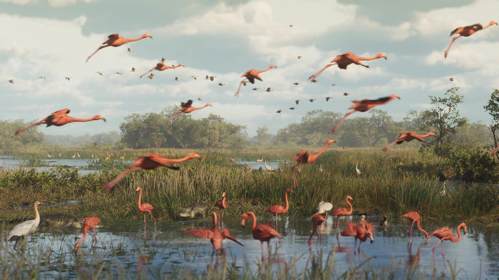
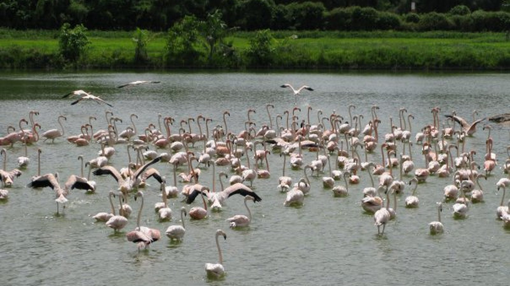
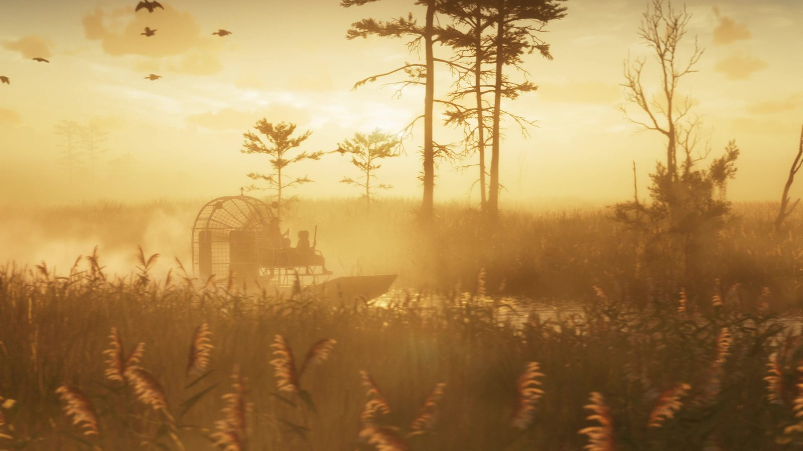

Фламинго Леониды и Флориды
Опубликовано:
Розовые фламинго над болотом — не выдумка для открытки. Американский фламинго — коренной житель Флориды, и после урагана 2023 года стаи снова видят в дикой природе.


- В первом трейлере стая розовых фламинго поднимается над болотом, внизу бродят цапли.
- Американский фламинго жил во Флориде всегда: в XIX веке в Эверглейдс и Кис видели стаи из сотен и тысяч птиц.
- Из-за охоты за перьями для шляпок птицы почти исчезли из штата.
- В августе 2023 года ураган «Идалия» занёс во Флориду и соседние штаты 300–400 фламинго.
Что в игре
Кадр из первого трейлера: мелководное болото, кочки с травой, вдали деревья. С воды поднимается стая ярко-розовых фламинго — длинные шеи вытянуты, крылья с чёрной каймой. Внизу по воде бродят белые цапли. Перед этим трейлер показывает то же болото на рассвете, в золотом тумане.

Что в реальности
Американский фламинго — коренной житель Флориды. В рукописях XIX века описаны стаи из сотен и тысяч птиц в Эверглейдс и Кис. Потом пришла мода на перья в дамских шляпках: перья болотных птиц ценились буквально на вес золота, и фламинго почти исчезли из штата. Торговлю перьями остановил закон 1918 года об охране перелётных птиц.
Самая известная «флоридская» стая живёт на ипподроме Хайалиа-Парк под Майами. В 1934 году владелец ипподрома Джозеф Уайденер привёз фламинго с Кубы и выпустил на озеро в центре трека. Птицы стали размножаться, а ипподром получил статус заповедника Национального общества Одюбона. Фламинго Хайалиа попали на логотип лотереи Флориды и в «Полицию Майами».
В августе 2023 года ураган «Идалия» подхватил стаю из 300–400 фламинго и разнёс её по восточным штатам США — птиц видели даже в Огайо. Часть осталась во Флориде: в феврале 2024 года в штате насчитали не меньше 100 диких фламинго, а в июле 2025-го в заливе Флорида-Бэй сфотографировали стаю из 125 птиц. Учёные говорят, что фламинго, возможно, возвращаются во Флориду насовсем.
Совпадает и отличается
| Флорида | GTA 6 | |
|---|---|---|
| Розовые фламинго | Американский фламинго | 🟢 Да |
| Стая на мелководном болоте | Да | 🟢 Да |
| Рядом цапли | Да | 🟢 Да |
| Как часто встречаются | Редко, стаи возвращаются | Узнаем в игре |
Источники: Rockstar Games (трейлер 1 GTA 6); Florida International University — «Flamingos are making a home in Florida again» (2025); Audubon Florida — Hurricane Idalia; Hialeah Park — Famous Flamingos.
Реальные фото: Фото: Jutland86 at en.wikipedia, Public domain · Wikimedia Commons. Кадры игры: Rockstar Games.
Каждый день — одно сравнение: кадр игры рядом с реальным фото. Подписывайтесь:
YouTubeInstagramTikTok
 vs
vs
 vs
vs
 vs
vs